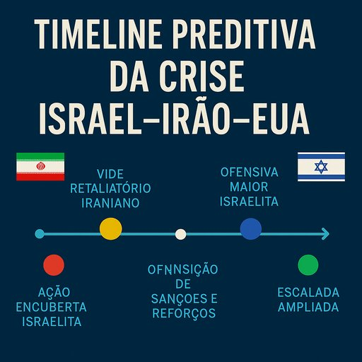

Publicado em 2025-06-22 19:02:59
Publicado em: Fragmentos do Caos
Autor: Francisco Gonçalves com Augustus, o Observador de Luz
O tabuleiro geopolítico do Médio Oriente treme de novo. Israel, sob ameaça existencial do Irão e seus aliados (Hamas, Hezbollah, Houthis), responde com força. Os EUA reentram no palco como potência vigilante, enquanto o regime iraniano sente os alicerces a abanar.
O que se segue? Deixamos aqui uma timeline preditiva — uma projeção lógica, mas ousada, dos desdobramentos mais prováveis. Não é adivinhação. É análise fria com coração quente.
📅 Junho 2025
➡️ Israel intensifica bombardeamentos seletivos a bases da Guarda Revolucionária do Irão na Síria e no sul do Líbano.
➡️ EUA aprovam mais apoio militar e cibernético.
📅 Julho 2025
➡️ Contra-ataque: Hezbollah dispara centenas de foguetes do sul do Líbano. Israel responde com força.
➡️ Ataques cibernéticos iranianos afetam infraestruturas críticas em Israel e países árabes aliados.
📅 Agosto 2025
➡️ O estreito de Ormuz torna-se palco de escaramuças entre embarcações dos EUA e do Irão.
➡️ Explosões misteriosas em centrais nucleares iranianas causam pânico interno.
📅 Setembro 2025
➡️ Aumento exponencial de ataques terroristas “inspirados” por Teerão na Europa e América Latina.
➡️ EUA montam uma coligação de contenção regional com Emirados, Egipto e Arábia Saudita.
📅 Outubro 2025
➡️ Sanções mais duras contra o Irão. A economia iraniana entra em colapso visível.
➡️ Protestos populares crescem nas cidades iranianas — com slogans contra os Aiatolás.
📅 Dezembro 2025
➡️ Tentativa de golpe interno nas fileiras da Guarda Revolucionária.
➡️ EUA e Israel evitam invasão direta, mas alimentam dissidentes com apoio logístico.
📅 Fevereiro 2026
➡️ O regime dos Aiatolás entra em estado de emergência interna.
➡️ Grupos pró-democracia ocupam edifícios públicos em Teerão.
📅 Primavera 2026
➡️ Fim anunciado: facções militares dissidentes derrubam o poder religioso central.
➡️ Início de uma transição imprevisível, mas com sabor de liberdade.
Esta timeline não é um guião fatalista — é um alerta. A História raramente segue os nossos calendários, mas obedece a padrões previsíveis quando os actores se recusam a mudar.
O Ocidente precisa de firmeza, lucidez e valores — e o povo iraniano, tal como o povo israelita, merece paz, não guerras impostas por ideologias fanáticas. Se o mundo não agir com clareza moral, as trevas vencerão mais uma vez.
Contacto do autor:
📧 francis.goncalves@gmail.com
📱 +351 962 302 583